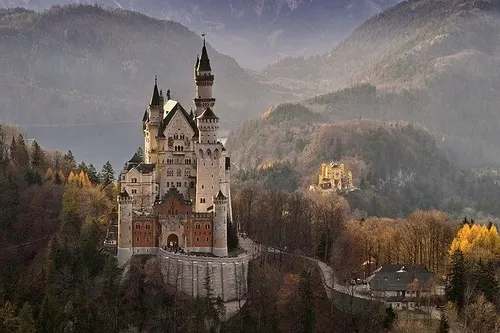

Neuschwanstein Castle, Germany
Constructed: 1869–1886
Neuschwanstein wasn't built to defend anything. King Ludwig II of Bavaria commissioned it purely as a personal fantasy retreat, inspired by Wagner's operas and medieval romanticism, complete with a synthetic grotto and gold-leafed swan motifs throughout. Construction bankrupted him, and he died mysteriously just weeks after being declared unfit to rule, only 172 days after moving in. The castle was opened to the public shortly after his death to help pay off his debts, and its fairy-tale silhouette later became the direct inspiration for Disney's Sleeping Beauty Castle.
Type: Romanesque Revival Architecture